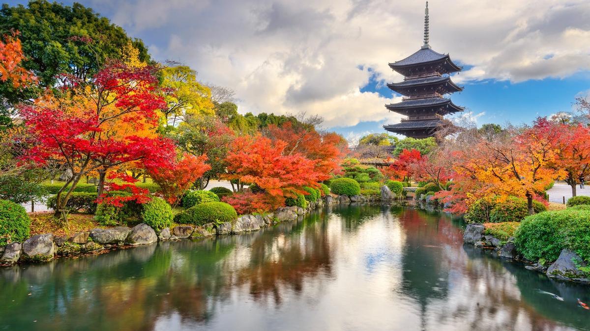

¡Sumérgete en la fascinante cultura japonesa con nuestros exclusivos viajes a Japón! En nuestra agencia de viajes, nos esforzamos por brindarte experiencias únicas y memorables en la tierra del sol naciente. Desde los vibrantes paisajes urbanos de Tokio hasta la serena belleza de los templos ancestrales en Kioto, te invitamos a descubrir la magia de Japón de la mano de nuestros expertos guías. Prepárate para una escapada inolvidable llena de tradición, gastronomía exquisita y un sinfín de maravillas por explorar. ¡Tu aventura japonesa comienza aquí!
Destinos

Tokio (東京)
Tokio, la capital de Japón, es una metrópoli vibrante que combina lo ultramoderno con la tradición. Los turistas pueden explorar el famoso cruce de Shibuya, disfrutar de las vistas desde la Torre de Tokio, y sumergirse en la cultura en el histórico templo Senso-ji en Asakusa. Tokio también ofrece una vida nocturna vibrante, moda de vanguardia en Harajuku, y una gastronomía que va desde sushi fresco hasta ramen.
Kioto (京都)
Kioto, la antigua capital, es el corazón cultural de Japón. Conocida por sus templos históricos, como el Pabellón Dorado (Kinkaku-ji) y Kiyomizu-dera, así como el icónico santuario Fushimi Inari Taisha con sus miles de torii rojos. Los turistas pueden disfrutar de tranquilos jardines zen, paseos por el Bosque de Bambú de Arashiyama y experimentar la ceremonia del té. Kioto es ideal para quienes buscan una inmersión en la historia y las tradiciones japonesas.
Hokkaido (北海道)
Hokkaido, la isla más al norte de Japón, es un paraíso natural. Conocida por sus espectaculares paisajes, como los campos de flores de Furano y los parques nacionales como Daisetsuzan. En invierno, Hokkaido atrae a los amantes del esquí y el snowboard en Niseko. La capital, Sapporo, es famosa por su festival de la nieve, su deliciosa cerveza y su exquisito marisco. Es el destino perfecto para los amantes de la naturaleza y las actividades al aire libre.